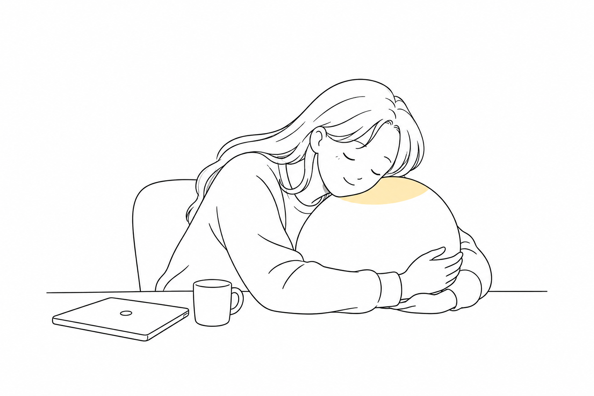

Master’s research · Design process · Unpublished
Napal: Design Exploration
An iterative design inquiry into desk-based rest.

How can a robotic companion support comfortable, low-effort rest at a desk? This project explores that question through iterative design and prototyping, developing Napal’s form and multisensory interaction around everyday resting practices.
The work produced a functional prototype and design insights into how bodily comfort, sensory experience, and social presence shape close interaction with a robot. These insights guided the refinement of Napal and established a foundation for further evaluation of robots for everyday well-being.